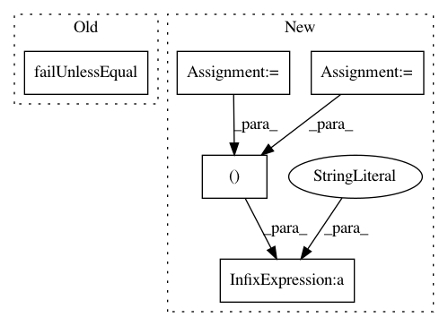

38a29a9f14674cb87e3053bf96f76c220aef8039,mvpa/tests/test_transerror.py,ErrorsTests,testConfusionBasedError,#ErrorsTests#Any#,136
Before Change
Shouldn"t be able to access the state yet
l_clf.train(train)
self.failUnlessEqual(err(None), terr(train),
msg="ConfusionBasedError should be equal to TransferError on" +
" traindataset")
// this will print nasty WARNING but it is ok -- it is just checking code
// NB warnings are not printed while doing whole testing
self.failIf(terr(test3) is None)
After Change
l_clf.train(train)
e, te = err(None), terr(train)
self.failUnless(abs(e-te) < 1e-10,
msg="ConfusionBasedError (%.2g) should be equal to TransferError "
"(%.2g) on traindataset" % (e, te))
// this will print nasty WARNING but it is ok -- it is just checking code
// NB warnings are not printed while doing whole testing
In pattern: SUPERPATTERN
Frequency: 3
Non-data size: 5
Instances
Project Name: PyMVPA/PyMVPA
Commit Name: 38a29a9f14674cb87e3053bf96f76c220aef8039
Time: 2010-03-10
Author: debian@onerussian.com
File Name: mvpa/tests/test_transerror.py
Class Name: ErrorsTests
Method Name: testConfusionBasedError
Project Name: PyMVPA/PyMVPA
Commit Name: 5117742ade395530a5e65dba57c927113256aa4b
Time: 2010-03-10
Author: debian@onerussian.com
File Name: mvpa/tests/test_transerror.py
Class Name: ErrorsTests
Method Name: test_confusion_based_error
Project Name: PyMVPA/PyMVPA
Commit Name: 58954f729b1efe76a7cb13057baf3e7e48e0ac79
Time: 2010-01-13
Author: debian@onerussian.com
File Name: mvpa/tests/test_datameasure.py
Class Name: SensitivityAnalysersTests
Method Name: testAnalyzerWithSplitClassifier